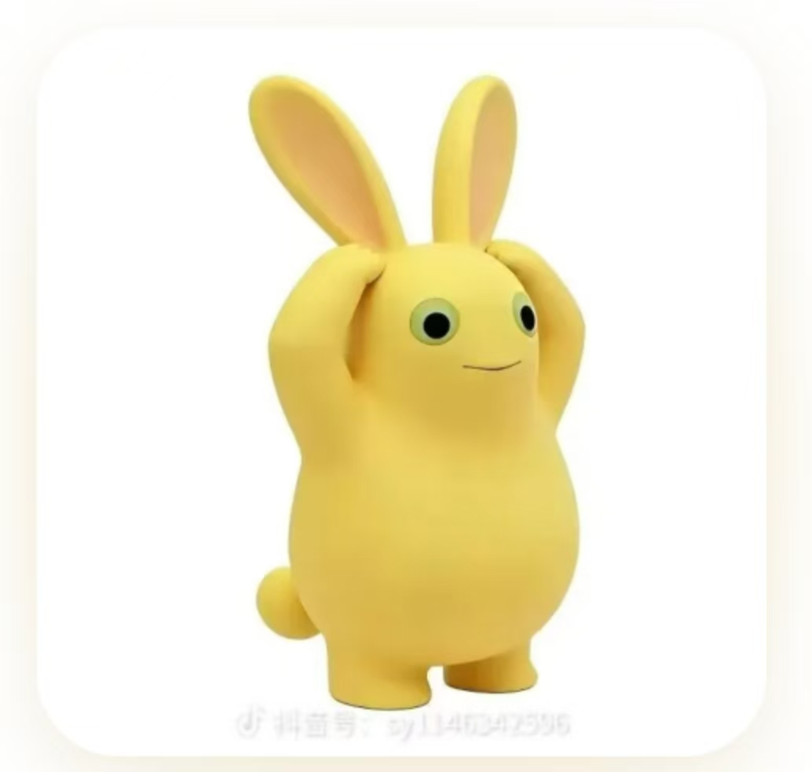

Nai Tu (Milk Rabbit) is a dessert made from milk, rice flour, and sugar. Shaped like a small rabbit, it has a soft, chewy texture and a gentle milky sweetness. Its cute appearance and light flavor make it a playful treat for children and adults alike.
Served chilled or warm,Nai Tu is often dusted with coconut flakes or dipped in fruit syrup. The cool, springy bite and creamy taste make it a refreshing snack, especially in summer. It is simple to make and fun to shape by hand.